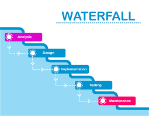

4. DTI MRI Imaging¶
A subset of subjects will undergo DTI acquisitions. Site participation in this substudy is dependent upon model and software version of each site’s MRI scanner. The specific scanner model to be used in this sub-study is the Siemens 3T TIM Trio. Software versions must be VB15 or higher. Data will be collected using a 12 channel Matrix head coil.
DTI MRI’s will be performed based on the subject’s cohort for more information see, 4.1.1 Clinical Protocol.
Sites will be supplied with software version specific electronic protocol (EDX file) that will need to be imported into each scanner. Use only the imported PPMI sequences when scanning a subject.
4.1 Human Subject Data collection Protocol¶
4.1.1 Clinical Protocol¶
A fiducial marker is to be used for each scanning session in order to accurately determine right to left subject orientation during image review. Prior to the start of each scanning session, tape a vitamin E capsule to the right temple of the subject. See the below given Figure for correct placement of the vitamin E capsule.
{kind=link}